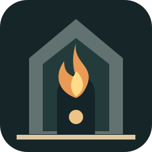

ПЕПЕЛЬНЫЙ
ДОЗОРАББАТСТВО · НОЧЬ
ДОЗОРАББАТСТВО · НОЧЬ
ОГОНЬ
01 / 05ЗАЩИТА
0ИЗГНАНО
ПОВОРАЧИВАЙ СВЕТ ПАЛЬЦЕМПОСЛЕДНИЙ ОГОНЬ
ПЕПЕЛЬНЫЙ
ДОЗОР
Свет обжигает тьму. Направляй луч пальцем. Колокол отталкивает тех, кто подошёл слишком близко.